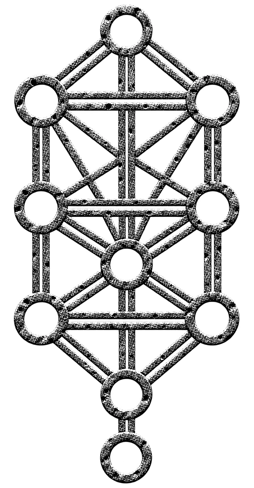

Шесть вопросов. Твоё прочтение.
Ты носишь знак.
Но какой — твой?
Ты уже увидел, как символы меняют смысл. Теперь посмотри, какой смысл ты выбираешь сам.
Здесь нет правильных ответов.

Шесть вопросов. Твоё прочтение.
Ты уже увидел, как символы меняют смысл. Теперь посмотри, какой смысл ты выбираешь сам.
Здесь нет правильных ответов.
